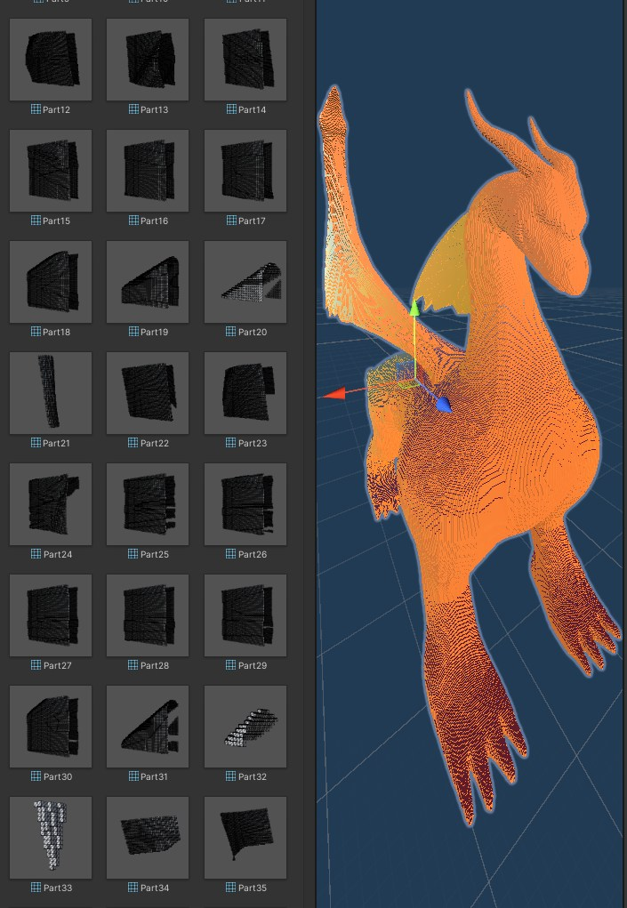

Overview
Every input goes through the same pipeline, so a noise landscape, a maze built from cubes and a voxelized dragon all end up as the same kind of chunk.
- InputNoise, arrays, placed cubes or a model
- ChunksFlat arrays of block types
- MeshVisible faces only, atlas UVs
- PrefabMeshes saved as assets
Two versions
Cubic
Voxels are 1×1×1 and positions are whole numbers. Chunks sit side by side as columns of a fixed height, which suits height-map terrain.
Dimension-Agnostic
Each axis has its own chunk size and voxel size, and chunks stack vertically too. Worlds are fully 3D, with caves, overhangs and enclosed spaces, and voxels can stretch to match a model’s proportions.
Both share the same chunk layout and mesh pipeline. The second is slightly slower and a lot more flexible.
Chunks and Meshing
A chunk stores its voxels as a flat BlockType array and converts between index and coordinates with x + sizeX·y + sizeX·sizeY·z, so iterating a chunk is one loop instead of three. The block types are Nothing (outside the world), Air, Wall, and Ground for the top layer, which gets its own texture.
Meshing only builds faces that can be seen. For each solid voxel, the mesher checks its six neighbours and adds a quad only on the sides that face air. When a neighbour lies outside the chunk, the lookup goes through the World to the chunk next door, so the faces where two chunks meet are culled too.
public static MeshData GetMeshData(ChunkData chunk, int x, int y, int z,
MeshData meshData, BlockType blockType)
{
if (blockType == BlockType.Nothing || blockType == BlockType.Air)
return meshData;
foreach (Direction direction in directions)
{
var neighbourBlockCoordinates =
new Vector3Int(x, y, z) + direction.GetVector();
var neighbourBlockType =
Chunk.GetBlockFromChunkCoordinates(chunk, neighbourBlockCoordinates);
if (neighbourBlockType == BlockType.Air ||
neighbourBlockType == BlockType.Nothing &&
(renderNothing || direction.Equals(Direction.up)) &&
(renderDown || !direction.Equals(Direction.down)))
{
meshData = GetFaceDataIn(direction, x, y, z, meshData, blockType, chunk);
}
}
return meshData;
}Textures come from an atlas. A ScriptableObject maps each block type to one tile for its top and one for its sides, and the four UVs for each tile are computed once and cached. Each chunk also builds its own collision mesh lists. Today they match the render mesh; they’re kept separate so blocks like water or glass could later be drawn without colliders.


Generation
Perlin noise
The default world samples 2D Perlin noise in world coordinates, so neighbouring chunks line up without seams. Each column is Ground at the surface, Wall below and Air above, and noiseScale sets how broad the hills are. In the 3D version, the height is measured against the whole stack of chunks rather than a single one.


Premade data
Overloads of GenerateWorld take 2D or 3D bool arrays (solid or empty), 2D int arrays (column heights) and 2D float arrays (normalised height maps). The input is cut into chunk-sized pieces, padded with empty cells at the edges, and meshed like everything else.
Cubes to maze
LabyrinthReader turns cubes placed by hand in the editor into a 2D bool array. It finds the bounds of the cubes, maps each cube’s position to a grid cell using the cube’s scale as the cell size, and hands the grid to the World. A designer can block out a maze with ordinary cubes and get one voxel mesh back, built from chunks with every hidden face removed.


Model Voxelizer
The voxelizer turns any model with colliders into a 3D bool array. It takes the combined bounds of the model’s renderers and picks a grid size: a fixed size, one voxel per world unit with an optional scale factor, or matched to the World’s voxel size. Then it runs one Physics.CheckBox per cell. The dragon below, at its original scale, is 79 × 133 × 199 cells: about 2.1 million box queries.

Making it solid
Mesh colliders are surfaces, so the box queries only find the model’s shell. The result is hollow, and the mesher would build faces on the inside walls too. FillSpaces fixes that with a reverse flood fill: it floods the empty space from every cell on the six outer faces of the grid and marks everything it can reach. Any empty cell left unmarked is enclosed by the model, so it gets filled.
Seeding from every boundary cell, not just one corner, matters because a model that touches the edges of its bounding box can split the outside air into separate regions. Cells that are already marked are never pushed again, so after the first big fill most seeds cost almost nothing. The fill uses an explicit stack, because recursion would overflow on a grid with millions of cells.
private static void ReverseFloodFill(int x, int y, int z,
bool[,,] spaces, bool[,,] doNotFill)
{
if (spaces[x, y, z] && !doNotFill[x, y, z])
{
return;
}
Stack<(int x, int y, int z)> stack = new Stack<(int, int, int)>();
stack.Push((x, y, z));
doNotFill[x, y, z] = true;
while (stack.Count > 0)
{
(x, y, z) = stack.Pop();
TryPush(x - 1, y, z, spaces, doNotFill, stack);
TryPush(x + 1, y, z, spaces, doNotFill, stack);
TryPush(x, y - 1, z, spaces, doNotFill, stack);
TryPush(x, y + 1, z, spaces, doNotFill, stack);
TryPush(x, y, z - 1, spaces, doNotFill, stack);
TryPush(x, y, z + 1, spaces, doNotFill, stack);
}
}
private static void TryPush(int x, int y, int z,
bool[,,] spaces, bool[,,] doNotFill, Stack<(int, int, int)> stack)
{
if (x >= 0 && x < spaces.GetLength(0) &&
y >= 0 && y < spaces.GetLength(1) &&
z >= 0 && z < spaces.GetLength(2) &&
!spaces[x, y, z] && !doNotFill[x, y, z])
{
stack.Push((x, y, z));
doNotFill[x, y, z] = true;
}
}

Saving as a prefab
SaveToPrefab turns a generated world into a normal asset. It saves each chunk’s mesh as a .asset file, skipping empty chunks, removes the generator component and saves the chunks, parented under one object, as a prefab.

Game of Life
To try generation from simulation, I built versions of Conway’s Game of Life that render through the same pipeline, one voxel per cell. The rules take ranges: a dead cell comes alive if its number of live neighbours is inside the birth range, and a live cell dies if its count is at or below the death range’s minimum or at or above its maximum. Birth 3–3 with death 1–4 is classic Conway. Each generation is written into a second grid and the two are swapped, so a step never reads cells it has already updated.
- 2D: the classic rules, with each live cell drawn as a column of voxels.
- Perlin: live cells take their height from a moving noise field, so the pattern ripples.
- Survivor: cells have a strength instead of being alive or dead. Meeting the birth rule adds one, meeting the death rule takes one away, and with the right ranges, pillars grow, collapse and grow back.
- 3D: 26 neighbours per cell, seeded across the whole volume, the top or bottom layer, or a diagonal plane.
One 3D setup stands out: birth at exactly four neighbours, and death at any count. No cell survives more than one generation, yet new births keep the pattern moving and spreading until it reaches the edges of the cube.
What I’d Change
- Greedy meshing. Every visible face is its own quad. Merging touching faces of the same type into larger rectangles would cut the vertex count of flat terrain to a fraction.
- Reuse chunk objects. Each Game of Life step calls
GenerateWorld, which destroys and re-instantiates every chunk. Only chunks whose cells changed need a new mesh. - Batch the voxelizer’s queries. Two million
Physics.CheckBoxcalls run one at a time on the main thread. Unity’sOverlapBoxCommandcan run them as a batched job. - Stream chunks. Everything is generated up front. Generating and unloading chunks around the camera would allow worlds of any size.
- Merge the two versions. The cubic version is the general one with a voxel size of 1, and keeping two copies meant fixing everything twice.